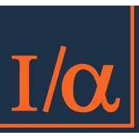

Hi, I'm Dakshina
Business Analytics professional. Data pipelines, risk reporting, and operational metrics.
About
Currently completing an MSc in Business Analytics at Dublin Business School. I have 3+ years of experience streamlining complex financial data pipelines and reducing manual risk reporting. I focus on compliance, strategic insights, and turning raw data into actionable intelligence.
Work Experience

ICICI Prudential Life Insurance
July 2023 - Jan 2025Assistant Manager – Risk & Data Analytics
Built SQL + Power BI pipelines automating weekly reports (reduced manual effort 40%). Created operational metrics dashboards improving reporting turnaround by 25%.

Insync Analytics
Sep 2022 - July 2023Financial Analyst – Risk & Data Analysis
Performed deep-dive quantitative analysis on datasets to evaluate risk. Streamlined data prep using Python and SQL.
ICICI Bank
April 2022 - Sep 2022Deputy Manager – Credit Risk Monitoring
Identified early warning indicators and developed automated modeling tools for credit risk.

NNEELL'S INVEST
May 2021 - July 2021Data Analyst (Internship)
Back-tested trading algorithms using historical time-series data. Processed large datasets in Python.
Education

Dublin Business School
2024M.Sc. in Business Analytics
Thakur College (Mumbai University)
2021Master of Management Studies
Skills
Check out my latest work
I've developed a variety of analytical pipelines and machine learning algorithms. Here are a few featured projects covering computer vision, geospatial intelligence, and predictive modeling.

Waste Detection AI
DissertationReal-time waste detection using YOLOv8-Large. 76.4% mAP. Optimized for edge deployment (5ms).
Air View of Dublin
Data AnalyticsPower BI dashboard integrating road network and pollution data to identify high-emission zones.
Credit Risk Prediction
Machine LearningEnd-to-end ML pipeline predicting loan default risk. Feature engineering and data cleaning.
Get in Touch
I'm based in Ireland and actively exploring new opportunities.